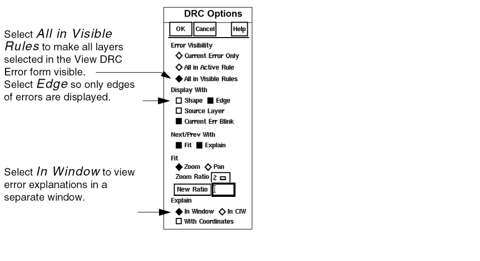
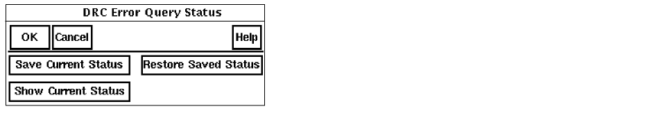

2
Displaying DRC Errors in a Flat Design
This chapter relates to the Design Rule Checking (DRC) commands in the Dracula® graphical user interface and covers the following topics
- About Flat DRC
- Starting DRC
- Defining How to Display DRC Errors
- Displaying DRC Errors
- Verifying DRC Rules
- Keeping Track of Errors You’ve Seen
- Quitting the Tutorial
- Summary
About Flat DRC
When you run a flat DRC, Dracula creates error files for each of the design rule checks. In this chapter, you’ll learn how to use the graphical user interface to display Dracula data. You’ll use the the graphical user interface commands to locate and examine error flags in these files automatically, while the graphical user interface keeps track of which errors you’ve seen.
The procedures in this tutorial use Dracula output error files, not the original layout data. Because Dracula output data is in a different format, data you’ll see in this tutorial won’t look like your original layout data.
In this chapter, you will learn how to
- Start the graphical user interface DRC
- Select DRC error files to display
- Define how to display DRC errors
- Display DRC errors
- Verify DRC rules
- Keep track of which errors you’ve seen
- Quit the Cadence software
Starting DRC
You need to create and open an empty cell, which is explained in Chapter 1, “Creating an Empty Cell.”
After you open the empty cell, the Dracula graphical user interface window appears. This graphical user interface window and the Layer Selection Window (LSW) are the only two windows open. You can ignore the LSW for now.
Accessing Dracula Error Files in the Dracula Graphical User Interface Window
In order to tell the software where to find your Dracula error files follow these steps.
-
To display the DRC commands, click left on the DRC menu.
-
Select Setup from the DRC menu.
The DRC Setup form appears.
-
To tell the Dracula graphical user interface where to find your Dracula DRC files, in the Dracula Data Path field, type
dracrun.
If you did not start the software in the directory where the Dracula DRC files are located, you must type the complete path to the files. - Click left on OK.
The graphical user interface window opens displaying all the error flags.
-
Dracula Layer Window
The Dracula Layer Window (DLW) appears on the left side of your screen and covers the Layer Selection Window (LSW). The DLW shows the original layers in your design after you run Dracula. You use the DLW to select the layers you want to view. -
View DRC Error window
The View DRC Error window opens at the right side of your screen. This window lets you cycle through and manage DRC errors in the graphical user interface window. -
Reference Window
The Reference Window opens at the bottom left of your screen. This window shows the entire the graphical user interface window on a small scale and helps you determine where you are in the design window. You can use theWindow – Zoom Reference Areacommand to have the the graphical user interface window zoom to the area you specify in the Reference Window. -
Rules Layer Window
The Rules Layer Window opens at the bottom of your screen. This window lists DRC error files and lets you select errors you want to view in the graphical user interface window.
You will use these windows later in this tutorial. For now, you can ignore them.
Now the graphical user interface knows where to find your Dracula DRC error files. Next you’ll select individual error files you want to display.
Defining How to Display DRC Errors
To help you distinguish different types of errors, you set the way you want error flags to appear in the graphical user interface window. For this chapter, you’ll display error flag outlines.
Displaying Error Flags
-
To set how error flags are displayed, from the DRC menu, select Display Options.
The DRC Options form appears. -
Select the following options.
The graphical user interface window is automatically updated when you select display options. You might want to leave this form up so you can quickly change how error flags are displayed. To close the form, click OK.
You just specified how you want errors to be displayed. Next you’ll display the errors.
Displaying DRC Errors
A Dracula run often generates several DRC error files. To minimize the number of error flags in the graphical user interface window, you might want to display only a few errors at one time. For this chapter, you’ll zoom in on each contact-to-via error.
Selecting Error Files
-
In the Rules Layer Window, click left on CNTVIA06.DAT.
This makes the CNTVIA06.DAT error your current error file. -
In the View DRC Error window, select Fit Current Error.
The first contact-to-via error appears in the graphical user interface window.
A window explaining the error appears in the upper right corner of your screen. You can ignore this window for now.
-
To display the layout layers associated with this error, from the Display With field on the DRC Options form, select Source Layer.
The graphical user interface window is automatically updated to show the source layers for the CNTVIA06.DAT error. In this case, the layers that are CONTACT and VIA, the layers that are the source of the error.
You’ve just displayed the Dracula layers for an error flag. Next you’ll examine and verify the cause of these contact-to-via spacing error flags.
Verifying DRC Rules
Now that you’ve seen the contact-to-via spacing error, you’re ready to determine the cause of the problem.
Displaying DRC Rules
- In the View DRC Error window, click left on Explain.
-
Click left on one of the DRC flags in the graphical user interface window.
The error window at the top of the screen explains the cause of the error.
-
To close the text file, from the File menu, select Close Window.
To verify that the error explanation reflects the problem in the design, you’ll measure the space between the contact and via Dracula layers. - Click left on the ruler at the bottom of the icon menu on the left of the graphical user interface window.
You see that this spacing is less than the required 0.6 microns.
-
To remove the ruler, go to the Misc menu and select Clear Rulers.
Now that you know how to display and verify errors, you need a way to keep track of which errors you’ve seen. Next you’ll display the error status report, which helps you automatically keep track of which errors you’ve seen.
Keeping Track of Errors You’ve Seen
To keep track of all the errors that resulted from your Dracula DRC run, you use the error status report. This report is a text file that provides information about these errors.
Displaying the Error Status Report
-
To display the error status report, from the View DRC Error window, select Commands – Error Status.
The DRC Error Query Status form appears.
 -
To display the error status report, click left on Show Current Status.
The status text file appears.
- To close this text file, from the File menu, select Close Window.
Quitting the Tutorial
At this point, you might want to continue working with the graphical user interface. If you’d like to continue, you can leave the windows you used for the tutorial on the screen or you can close them. If you want to close the windows, go to the “Closing Windows” section.
When you are ready to quit the Cadence software, go to “Quitting Cadence Software”.
In this section, you’ll learn about
Closing Windows
If you want to continue working with the graphical user interface, but would like to close some of the windows, follow these steps.
- To close the graphical user interface window, from the Window menu, select Close.
- To close a text window, such as the error status report window, from the File menu, select Close Window.
Quitting Cadence Software
To quit the Cadence software, follow these steps.
-
From the File menu in the CIW, select Exit.
A dialog box appears asking if you want to exit.
-
Click left on Yes.
The graphical user interface closes all the windows and returns you to the system prompt.
Summary
In this chapter, you learned how to use the graphical user interface to identify and display DRC errors in a flat design. Specifically, you learned to
- Start the DRC command from the graphical user interface’s menu
- Choose which errors to view
- Set how you want error flags to appear in the the graphical user interface window
- Display DRC errors
- Use the error status report to keep track of which errors you’ve seen
- Quit the Cadence software
Return to top